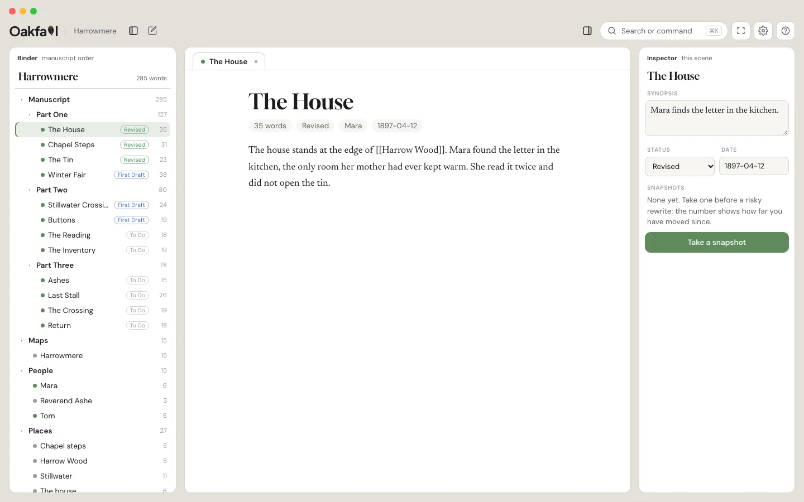

The writing studio for people who like to write.
A binder, snapshots you can compare side by side, your cast and places, maps, and threads, over a folder of plain Markdown you own. Gall lives in the margin and knows where everything is.
Free to write in. Windows, Linux, iPad and phone follow from the same app.

Try the risky rewrite. Keep the old one.
Before a big edit, take a snapshot and name it. Later, open it beside the live text with every change tinted at the word level, and pull back a sentence or the whole scene. Restoring snapshots the current version first, so nothing is ever the last copy.
Mara found the letter under the floorboard where her mother had always said nothing was hidden. She read it twice and then a third time, standing, because sitting felt like agreeing to it.
Outside, the rain had not stopped.
Mara found the letter in the tin with the buttons, which was the one place her mother never looked. She read it twice, standing, because sitting felt like agreeing to it.
Outside, the rain kept its own counsel.
Everything a long work needs, in one place.
Each part is a module you can turn off. They all read the same notes, so nothing is stranded when you do.
The binder
Parts, chapters and scenes in manuscript order, with a word count and status on every row. Drag to reorder; the order lives in the file names.
The inspector
Synopsis, label, status, story date, notes and snapshots for the scene you are on, beside the page instead of in a dialog.
Cast and places
A character is a note. Its appearances are the scenes that link to it or name it, so the cast panel reads the book for you.
Maps
Any image becomes a map: a drawn world, a town plan, the floor plan of the house. Pin places, draw roads and rivers, click through to the scenes.
Threads and timeline
Cards by thread or by story date, from the same synopsis, label and date fields. Scrivener's arrange-by-label, without retyping anything.
Your desk, your look
Light or dark, Desk or Classic, five looks, the page's paper and type size. Focus clears everything but the page.
Your manuscript is never held hostage.
A project is a folder of Markdown with a little frontmatter. Open it in any editor, sync it with anything, read it in fifty years.
Snapshots are plain copies, or ordinary git commits if you prefer. Uninstall Oakfall and every scene, note and snapshot is still there.
The app is free. You pay only if you want sync between devices and the editor tools.
Every studio has someone who knows where things are.
Gall lives in the l of Oakfall and steps out when you need him. Ask where someone was last seen, what changed since a snapshot, which scenes still mention the thing you just cut. He answers from your files and history, and he never writes your prose.
Half of Gall needs no model at all and works offline. He is free, and off until you turn him on. He dresses for the season.
Bring every project, and every snapshot you ever took.
The importer reads a .scriv package and writes an Oakfall project, replaying your snapshots as history with their original titles and dates. The original is never modified.
| In Scrivener | In Oakfall |
|---|---|
| Binder, folders and documents | The binder, folders and Markdown notes in manuscript order same |
| Snapshots | Named snapshots per scene, with word-level compare and safe restore better |
| Inspector: synopsis, label, status, notes | The inspector, from frontmatter you can read anywhere same |
| Corkboard and arrange by label | Threads and timeline, from the same fields same |
| Research folder | Research attached to the scene you have open |
| Character and setting sheets | Cast and places that find their own appearances new |
| Compile | Compile presets for manuscript, paperback and ebook paid |
go install github.com/oakfall/scrivener-to-obsidian/cmd/scriv2obsidian@latest scriv2obsidian convert -out ~/Writing -git Novel.scriv
Free to write in. One subscription if you want more.
Oakfall
- The whole desk: binder, page, inspector, snapshots and compare
- Cast, places, maps, threads and timeline
- Gall, with your own key or a local model
- Every look, every layout, Focus
- Your files, on your disk, forever
Oakfall with sync
- End-to-end encrypted sync between desktop, tablet and phone
- The editor tools: focus and audit, redlines back from Word, beta-reader rounds
- Compile presets
- Stop paying and every file stays exactly where it is
What Oakfall does not do.
- It does not write for you.Gall answers, finds, checks and proposes edits you accept. The prose is yours.
- It does not need an account.Writing, snapshots and every module work without signing in. Only sync needs one.
- It does not phone home.No telemetry. Gall sends your manuscript nowhere you did not point him.
- It does not lock your files.No database, no proprietary package. Markdown, frontmatter and images in folders.
Where Oakfall runs.
The app is in development; macOS is first. The Obsidian plugin and the Scrivener importer are open source and usable today.
Be first to write in it.
Write to us and we will send the macOS build when it is ready. One email, then nothing until there is something to say.
Email hello@oakfall.appOr try the desk now, in your browser: oakfall.app/preview